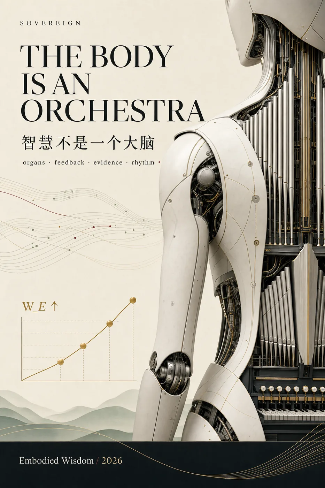
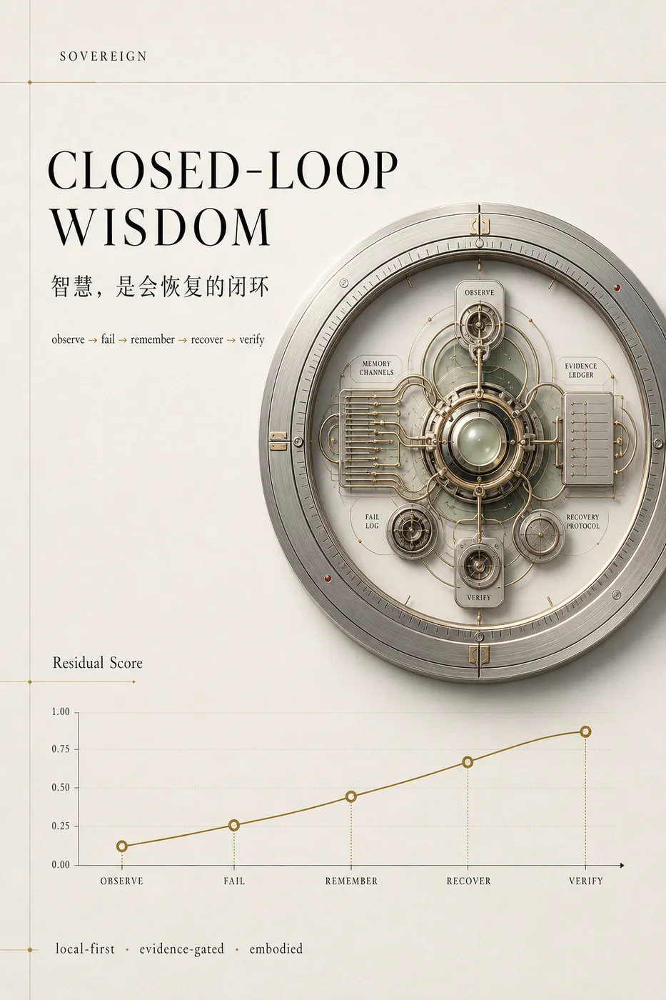

我们把智能系统拆成大脑、记忆、免疫、证据门、工作流、社会校准、具身反馈和行动边界。 这不是玄学隐喻，而是一套工程结构：每个模块都有输入、输出、健康指标和控制回路。
论文矩阵 P00-P20 对应这条路线：智慧科学、认知免疫、具身学习、表示法搜索、控制论教学、 社会分寸感、超体架构、世界模型安全、认知主权、行星级稳态和抗干扰证据完整性。
Ouroboros Project · 中文说明
这套研究关注的不是模型第一次看起来多聪明，而是它失败之后能不能复盘、恢复、守边界、留下证据， 并在下一次变得更稳。

核心主线
我们把智能系统拆成大脑、记忆、免疫、证据门、工作流、社会校准、具身反馈和行动边界。 这不是玄学隐喻，而是一套工程结构：每个模块都有输入、输出、健康指标和控制回路。
论文矩阵 P00-P20 对应这条路线：智慧科学、认知免疫、具身学习、表示法搜索、控制论教学、 社会分寸感、超体架构、世界模型安全、认知主权、行星级稳态和抗干扰证据完整性。
视觉原则
视觉不只负责好看，也负责建立信任：克制、精密、有艺术的心思，但不把读者挡在门外。 它要像一张专辑、一场展览、一本研究手册，同时又能被工程师快速读懂。


中文长文方向
先发一篇克制但有力量的中文长文，不夸张喊口号，把问题讲透。
统一入口
公开预印本可以展示真实身份；双盲会议材料必须使用匿名版本，不要把真实 DOI 和邮箱放进匿名稿。